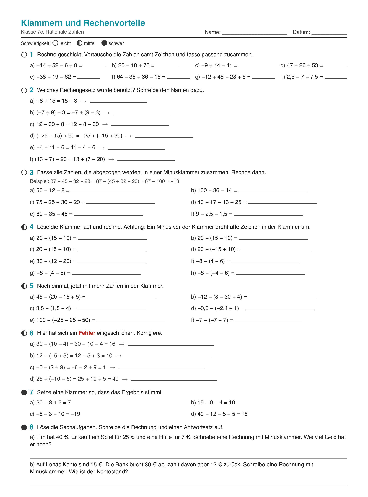
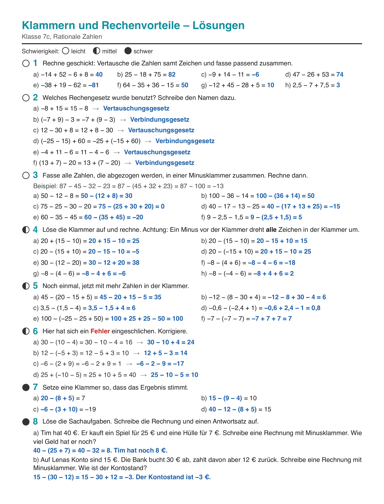
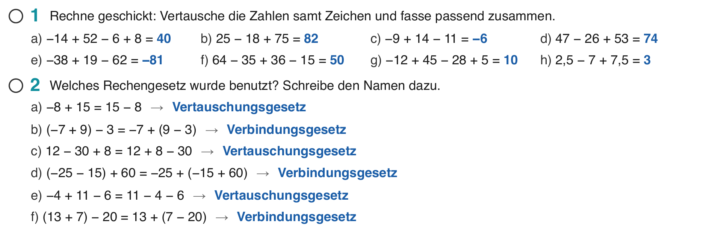
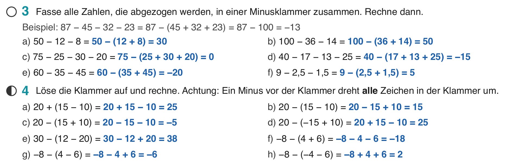

Klasse 7c, Mathematik, Di 29.09.2026, Doppelstunde
| Arbeitsblatt „Klammern und Rechenvorteile“ in Klassenstärke (Rationale Zahlen 3 – Arbeitsblatt Klammern.pdf, eine Seite). | |
| Digital | Folien-PDF dieser Stunde in Notability. Das Arbeitsblatt steht darin als ganze Seite zum Eintragen, danach die Lösungsseite. Datei: Mathe 7c – Woche 3 – 2 Rechengesetze, Minusklammer.pdf |
| Sonst | Buch mitbringen lassen. Hausaufgabe war Buch S. 22 Nr. 9 links. |
Vereinfache die Schreibweise und berechne.
Beispiel: (+10) − (+25) = 10 − 25 = −15
Bei b), d) und f) steht ein Minus vor einer negativen Zahl: Aus − (−14) wird + 14. Genau das passiert gleich bei der Minusklammer.
Rechne möglichst geschickt. Wie gehst du vor?
Warum dürfen wir die Zahlen umsortieren und zusammenfassen?

Du hast 50 €.
a) Du kaufst ein Heft für 12 € und einen Stift für 8 €.
b) Du kaufst Getränke für 12 € und bekommst 8 € Pfand zurück.
Wie viel Geld hast du jeweils? Rechne auf zwei Wegen.
Bei b) werden die 8 € nicht abgezogen, sie kommen zurück. Deshalb steht in der Klammer − 8, aufgelöst aber + 8.

Frage an die Klasse: Warum steht bei b) in der Klammer − 8, aufgelöst aber + 8? Die 8 € kommen zurück.
Bildungsplan Kl. 7/8/9, Teilkompetenz 9: die Gesetze angeben und an Beispielen erläutern. Deshalb die Namen im Merkheft und auf dem Arbeitsblatt (Nr. 2).
Bei b), d) und f) steht ein Minus vor einer negativen Zahl: Aus − (−14) wird + 14. Genau das passiert gleich bei der Minusklammer.

